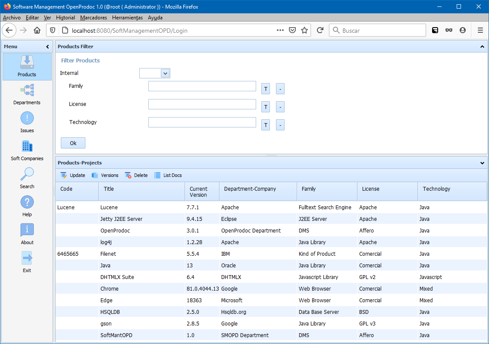
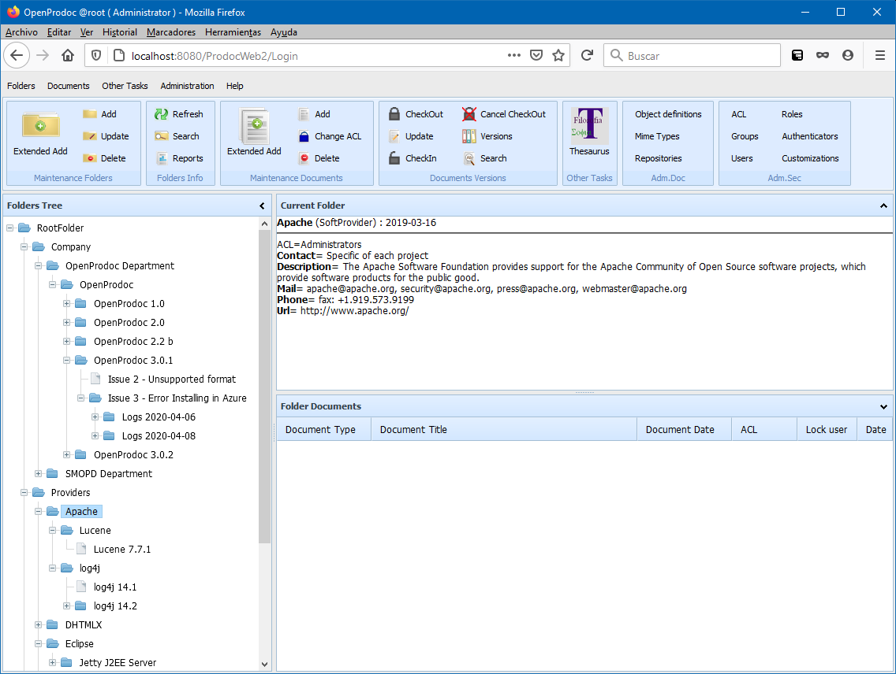

Software Management OpenProdoc (SMO) is an extension for OpenProdoc that facilitates the management of documentation related to development projects for the entire life cycle of a product, including development, management, deployment, obsolescence and incidents.
SMO stores all the documents and folders in OpenProdoc, as well as document types, folder types, users, list of terms and any other elements and the configuration, providing just an optimized interface for managing all the information needed for developing and using software products. Being an additional interface, most (not all) the operations can be made from the OpenProdoc interface, both systems being complementary. SMO can be configured in most of its elements, so this help and the screenshotts are based in the default configuration.
As a company using or development software, you will develop, or use for developing or deploying, some Products, whose reponsability will reside in different Departments of the company, or will be provided by external Software Companies. During the life of the Products, there will be developed and installed different Versions of them. Those Versions will have problems, carencies or errors that can be managed as Issues.
SMO interface has 3 main areas:
The menu is fixed and always displays the same buttons:

In SMO Forms Tree there is a complete view of operations and forms.
OpenProdoc stores the information of Departments, Companies, Products, Versions and Issues as OpenProdoc folders with descriptive fields that can contain other folders or documents. The structure will be something like:

Each "folder" will have a set of fields that allow to define the element, and will contains folders and documents that help to manage all the information in a centralized way.
When a user logs in SMO, the Products list is displayed, and selecting other buttons, the list of all the elements of that type are displayed. It's important to note that the elements displayed could be in any level of the structure, they are filtered by their type, not by his path in the structure, being the only limit the ACl-authorization asigned. That way, SMO shows a functional-type view while OpenProdoc shows an structure view.
The contents and structure of each list and filter will be different, and can be changed over the default values depending on the configuration made, however the behaviour is the same in all the lists. When entering in a section (Products, Departments, Issues or Software Companies), all the elements are displayed. Filling the filter form, it's possible to filter the list and display a sub set of the elements that meet the filter criteria. Over the list of elements there are different buttons that allow the principal operations of maintenance displaying specific forms. Those form will contain additional buttons and operations.
Depending on the Configuration, the list of fields for filter or the fields to show or manage can be diferent, so additional documentation MUST be writen ir order to describe the configured functionality. In Default ConfigurationValues page there is a description of the default definition for each element or form if there is no modification.
All the requirements for the product can be found in Before Install page and the installation process in the Install page.
In SMO Form Tree there is a complete view of operations and forms.